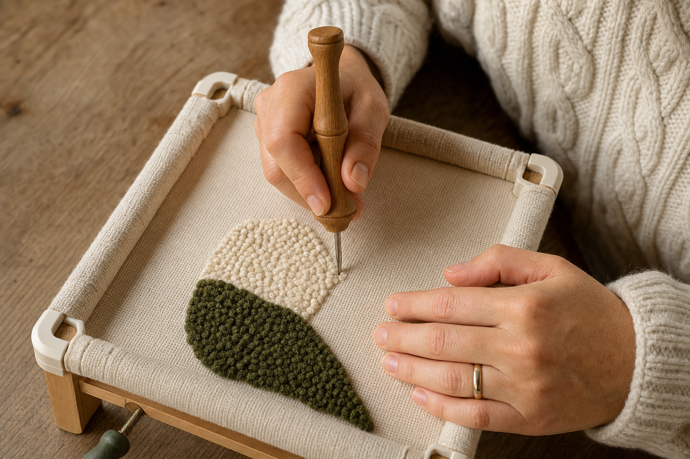

Module 04 · Core Technique
The mechanical heart of the craft. Five variables — grip, threading, anchor stitches, row spacing, corner turns — determine whether your loops stay in place. This module makes each of them explicit.

Lesson 4.1 — The pen grip and the open channel
Hold the punch needle exactly the way you'd hold a fountain pen: thumb and index finger on the shaft near the handle, middle finger supporting from underneath, wrist relaxed. The needle sits perpendicular to the fabric — straight up-and-down. Not angled.
Every punch needle has an open channel — a slot or notch cut into the side of the metal shaft, near the eye. This channel is where the yarn slides freely as you punch. Its position matters:
The open channel faces the direction you're moving. If you're punching away from your body, the channel points forward (away from you). If you're moving left, the channel points left. As you change direction, rotate the entire tool in your hand so the channel keeps facing forward.
Why: the channel needs to release yarn freely as the needle lifts and moves to the next stitch. If the channel faces backward, the yarn drags against the closed side of the needle and pulls the previous loop out. This is the single most common cause of loops popping out on straight rows.
Lesson 4.2 — Threading, tension buffer, and the loose puddle
Threading is trivial with a threader wire and easy to get wrong without one. Every punch needle comes (or should come) with a thin wire threader.
-
Thread the shaft
Push the wire threader down through the top of the needle handle and out through the eye. Hook the yarn end into the wire loop. Pull the wire back up through the handle — the yarn follows through the shaft. -
Thread the eye
Now thread the yarn end through the eye of the needle (the hole near the tip). Some needles have a second small hole on the side — check your specific model's instructions. -
Leave a 3–4" tail
On the loop side (the side that will be the finished front of the rug). This tail anchors your first stitch.
The loose puddle
Set your ball of yarn on the floor or on the far side of your work — not connected under tension. Pull out an arm's length of loose yarn and let it puddle. This is your tension buffer. As you punch, the needle pulls yarn from the puddle, not directly from the ball.
If yarn feeds directly from the ball into the needle, every stitch has to overcome the friction of the yarn dragging across the floor, up over the frame, into the needle. That drag pulls out the previous loop the second you lift the needle. The loose puddle eliminates the drag entirely.
Lesson 4.3 — Anchor stitches: how to start and stop
Every color starts with an anchor stitch and ends with an anchor stitch. Miss either one and that section of loops will unravel.
Starting a section
-
Punch the first stitch normally
Push the needle all the way down until the handle touches. Lift straight up until the tip grazes the surface. -
Poke the tail through
Reach under the fabric and pull the 3–4" starting tail through to the loop side (the finished front). You want all tails on the loop side, not the punching side. -
Anchor: punch back into the same hole, then a stitch forward
Some techniques call for punch-forward-then-back-into-first-hole. Either way, the point is to double-secure the starting stitch so the tail can't yank the first loop out.
Ending a section
-
Do a reverse anchor
At the end of the row or shape, punch back into the previous hole (or one hole back) to double-secure the last loop. -
Cut the yarn on the punching side
Leave a 3–4" tail. Pull it through to the loop side. -
Never trim tails until the piece is off the frame
Keep them long during the punching. They only get trimmed as part of finishing (see Module 06).
Lesson 4.4 — Row spacing, outlines, and filling
Loops need to be close enough to support their neighbors, but not so close that they crowd each other and pop upward. There's a working range.
| Situation | Stitch spacing | Row spacing |
|---|---|---|
| Outlines (a shape's border) | ~6 stitches per inch, packed tight | N/A — single-line outline |
| Filling (inside a shape) | ~4 stitches per inch | 3–5 mm between rows |
| Dense floor rugs (heavy wear) | ~5 stitches per inch | 2–3 mm between rows, brick-pattern offset |
Order of operations for a shape
Punch the outline first
Follow your drawn line, one row of tightly packed stitches. This sets the shape's edge cleanly.Fill from the outline inward
Punch parallel rows working toward the center. Each row should sit close enough that no gaps show through to the punching side but not so close that loops pile up.Alternate row direction
Row 1 goes left-to-right, row 2 right-to-left, row 3 left-to-right. This is called the brick pattern — each stitch sits between the two above it, not directly over the previous row's holes.
Every 15 minutes, flip the frame and look at the loop side. Are the loops uniform in height? Any bald patches showing the fabric through? Any long loose loops sticking up? Better to catch and fix these while the fabric is still framed than after.
Lesson 4.5 — Turning corners
The moment most beginner projects fall apart is the first sharp corner. Here's why: when you turn, the direction of travel changes — which means the open channel of the needle also has to change direction. Miss that rotation and the yarn drags against the closed side of the needle, pulling the previous loop out.
-
Punch the corner stitch fully down
Handle touches fabric. Keep the needle in the fabric — do not lift. -
While the needle is still down, rotate the handle in your fingers
Turn the tool so the open channel points in the new direction of travel. Because the needle stays anchored, this rotation doesn't disturb the loop. -
Lift the needle straight up
Grazing the surface, as always. Move to the next stitch position. -
Punch again in the new direction
The first stitch in the new direction should be tight against the corner stitch to lock the turn.
Every "my loops keep pulling out" problem can be traced to one of five things: fabric tension, punch depth, open channel direction, yarn drag, or trying to lift the needle too far between stitches. If you have to guess, guess in that order.